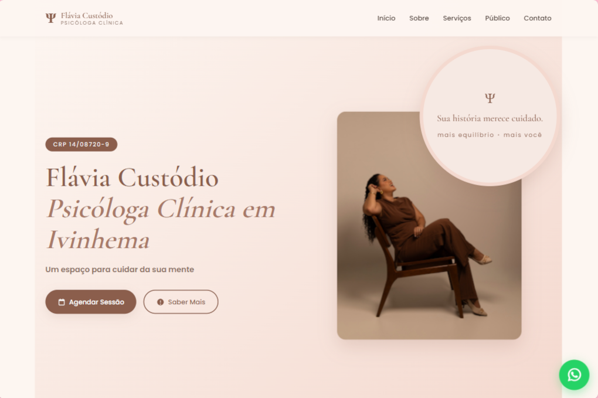

// Landing Page - Psicóloga Flávia
const stack = ['HTML', 'CSS', 'JS'];
const deploy = 'Netlify';
A cliente tinha somente Instagram pra divulgar o trabalho dela, sem site, sem lugar pra quem procurava atendimento entender quem ela era antes de marcar uma consulta. Entrei em contato oferecendo o projeto, ela topou na hora. Levantei o conteúdo a partir do que ela já compartilhava publicamente e organizei em seções claras, com formulário de agendamento e botão fixo de WhatsApp pra encurtar o caminho até a primeira sessão.